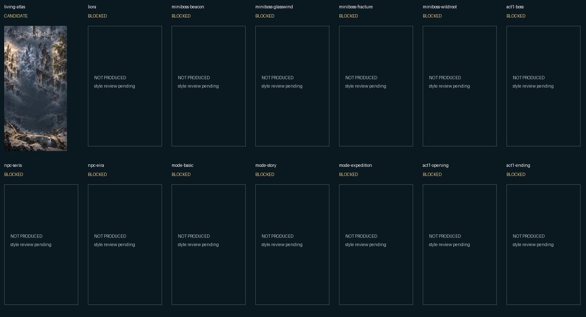
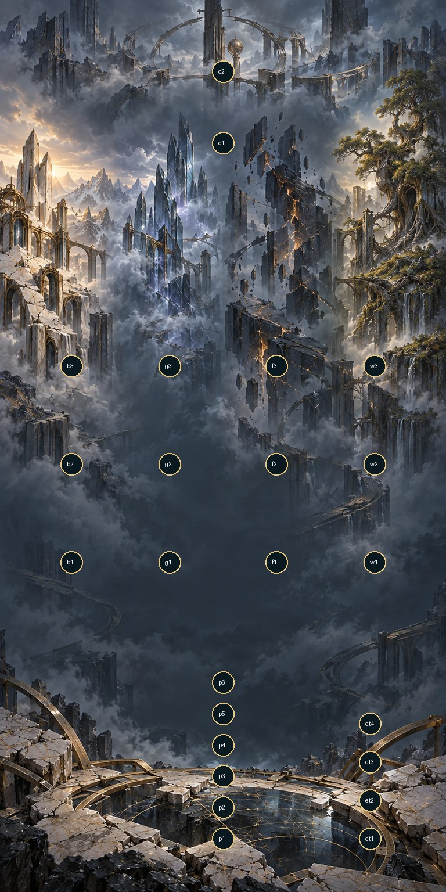
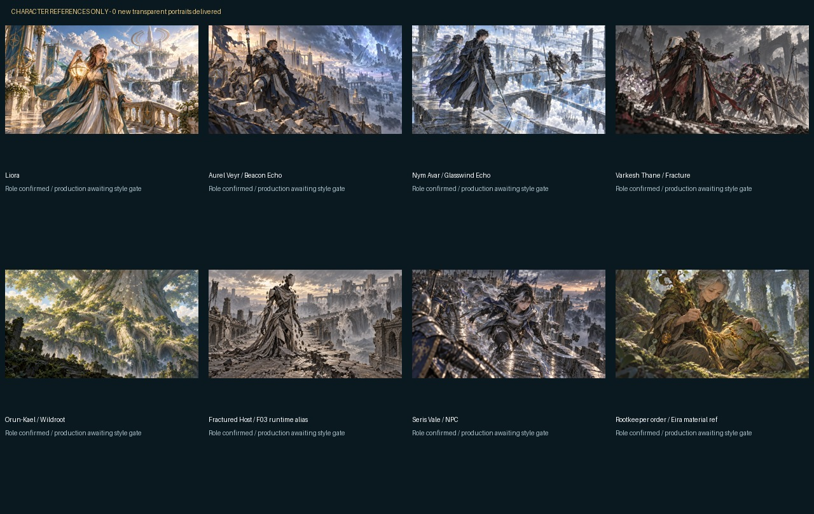

Adventure asset preparation · partial delivery
1/14 primary artworks produced: candidate Atlas proof. 21 SVG assets and 24 derived thumbnails passed file and visual checks. Remaining raster production awaits style-proof approval. These previews do not implement the game.
Manifest · README · Validation
Primary artwork inventory

Atlas review overlay
The labels and circles below are review overlays only. Source 887 × 1774; delivery 2048 × 4096 is a uniform upscale. Map density and native-resolution limitation remain candidate review items.

Character references only
No new transparent portraits delivered. Adventure roles confirmed by user; no canon promotion.

UI and medals

Stage thumbnails